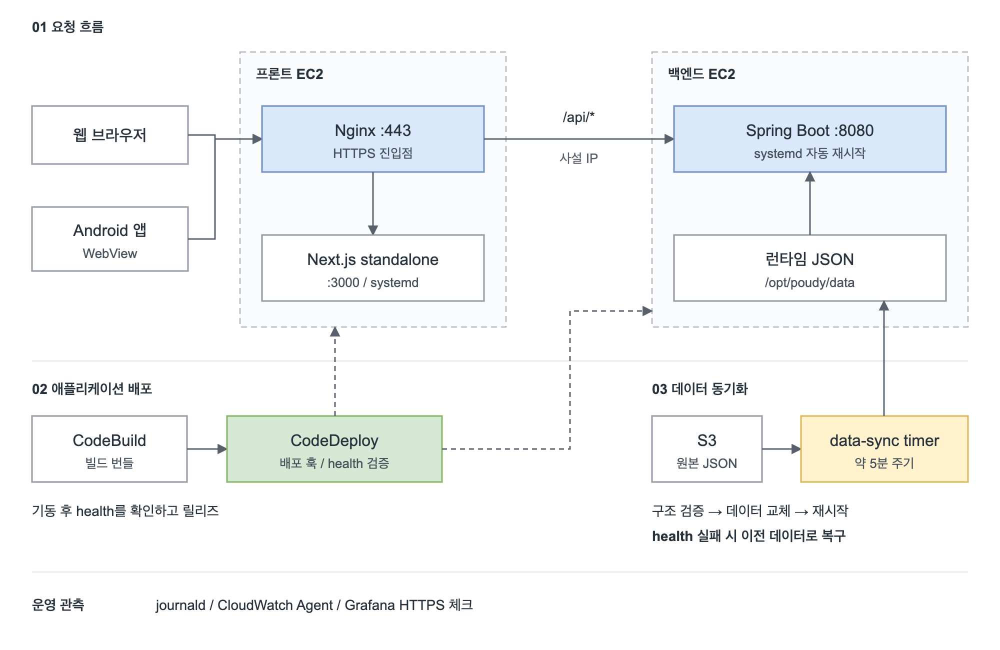
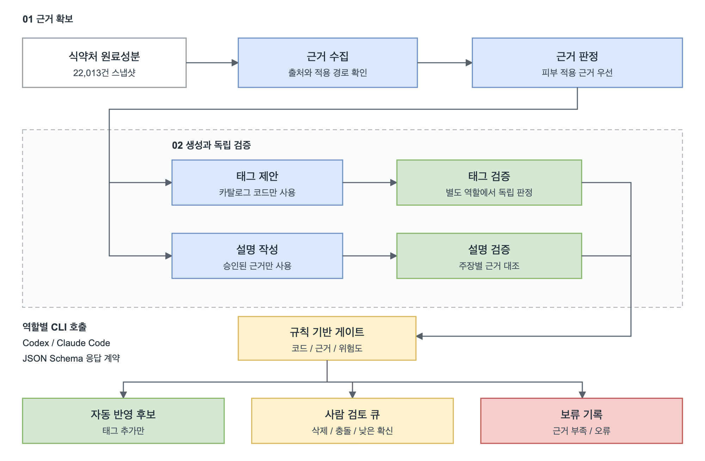
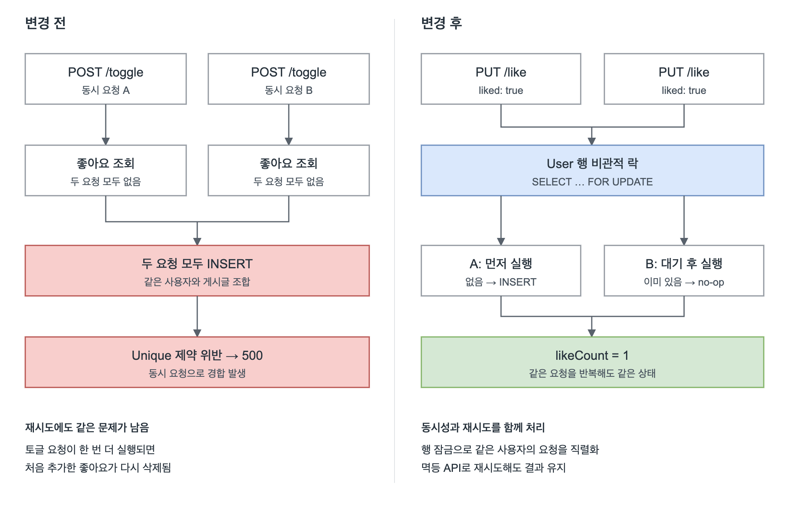
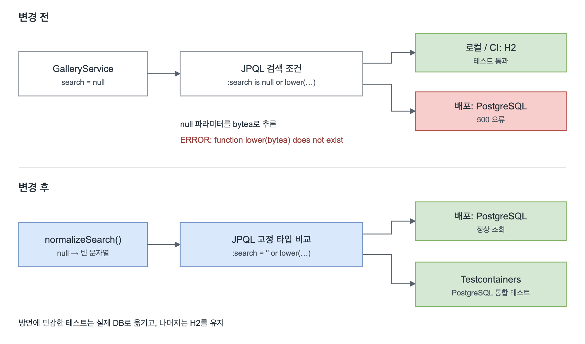
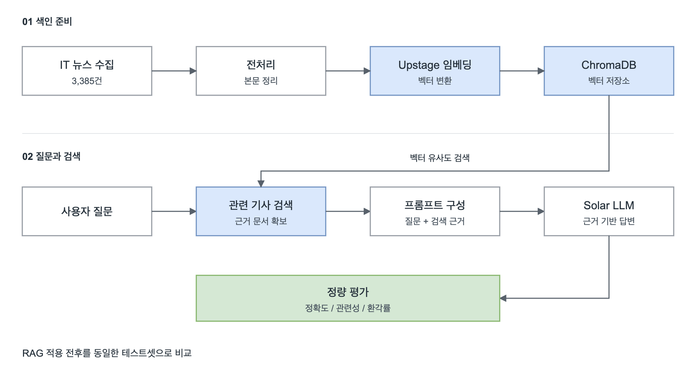

문제 해결 기록
Selected cases
- 01데이터 교체 실패 시 이전 상태로 복구하도록 배포 구성Poudy↗
- 02AI가 작성한 성분 정보를 별도로 검증하도록 파이프라인 설계Poudy↗
- 03동시 요청과 재시도로 발생한 좋아요 오류 해결Layer Archive↗
- 04로컬에서는 통과하고 배포 환경에서만 발생한 조회 오류 해결Layer Archive↗
- 05뉴스 기사를 검색해 AI가 없는 내용을 지어내는 문제 개선IT 뉴스 RAG↗
01Poudy인프라 / 2026.08 – 현재
데이터 교체 실패 시 이전 상태로 복구하도록 배포 구성
컨테이너 이미지 배포가 어려운 환경에서 systemd와 CodeDeploy로 배포를 구성하고, S3 데이터 교체에 실패하면 복구할 수 있는 경로를 마련했습니다.

Play Store 앱은 웹 화면을 WebView로 띄우는 셸이라, 웹과 앱이 같은 배포 위에서 동작합니다.
문제 원인
- MVP 단계라 단일 EC2 기반이고 Docker 이미지 저장소를 사용할 수 없어, 컨테이너 이미지 기반 배포를 택할 수 없었습니다.
- 서비스가 읽는 데이터(JSON)는 S3에 있어서, 애플리케이션 배포와 별개로 데이터 변경을 운영 서버에 안전하게 반영할 경로가 필요했습니다.
- 웹과 WebView 기반 Play Store 앱이 같은 서버를 쓰기 때문에, 배포나 데이터 교체 중 장애가 곧바로 두 채널의 장애로 이어지는 구조였습니다.
해결 과정
- Spring Boot JAR와 Next.js standalone 산출물을 EC2에서
systemd 서비스로 직접 실행하고, 프론트 EC2의 Nginx를 HTTPS 단일 진입점으로 두어 /api/*를 백엔드 EC2 사설 IP로 전달했습니다.
- 운영 배포 경로를 GitHub Actions에서 CodeBuild 빌드 번들과 CodeDeploy 배포 훅으로 옮기고, 서비스 기동 후 health를 검증하도록 구성했습니다.
poudy-data-sync.timer가 약 5분마다 S3 변경 여부를 확인하고, 필수 JSON 구조를 검증한 뒤 교체와 재시작을 수행하며 health check가 실패하면 이전 데이터로 롤백하게 했습니다.- journald 보존 정책, CloudWatch Agent, Grafana 외부 HTTPS 체크로 로그와 모니터링을 갖췄습니다.
결과
- www.poudy.site와 Google Play 앱을 이 배포 위에서 운영하며 릴리즈를 이어가는 중
- systemd 통제 테스트에서 백엔드 프로세스를 강제 종료(SIGKILL)하자 약 5초 후 자동 재시작, 약 24초 후 health 복구 확인
- k6 고정 부하 60초에서 캐시 미적중 30 req/s 오류 0%, p95 10.97ms, CPU 사용 최대 13%, swap 0을 SSM 지표와 함께 확인해 단일 EC2 유지의 근거로 삼음
02PoudyAI 데이터 파이프라인 / 2026.08 – 현재
AI가 작성한 성분 정보를 별도로 검증하도록 파이프라인 설계
성분 설명과 태그를 만드는 작업을 근거 수집, 생성, 독립 검증으로 분리하고 규칙 기반 승인 게이트를 두었습니다.

문제 원인
- 식약처 원료성분 데이터에는 표준명, 이명, 기원 정도만 있어 22,013건 전부에 소비자용 설명과 효능 태그를 새로 채워야 했고, 사람이 모두 작성하기 어려운 양이었습니다.
- AI에게 한 번에 맡기면 섭취 연구나 세포 실험 결과를 피부 효능처럼 쓰는 등 근거를 넘는 설명이 섞일 수 있어, 근거 기반 성분 정보라는 서비스 방향과 어긋났습니다.
- 자동 생성 결과를 사람이 전부 다시 보면 자동화 의미가 없어, 무엇을 자동으로 반영하고 무엇을 사람이 볼지 기준이 필요했습니다.
해결 과정
- 사람 피부 도포 연구를 세포, 동물, 섭취 연구보다 우선하는 근거 순위와 태그 부여 금지 규칙을 기준 문서로 먼저 정리했습니다.
- 근거 수집부터 설명 검증까지 서로 독립된 6개 역할로 나누고, Python 워크플로가 단계 순서와 데이터 계약을 관리하게 했습니다. 각 역할은 로컬 Codex, Claude Code CLI를 JSON Schema와 함께 호출해 정해진 형식으로만 응답받습니다.
- 규칙 기반 게이트에서 카탈로그에 없는 태그 코드는 거부하고 태그 추가만 자동 반영 후보로 두었으며, 삭제, 충돌, 낮은 확신도, 고위험 태그는 사람 검토 큐로 보냈습니다.
- 실행 중 응답 시간 초과와 모델이 두 성분의 식별값을 뒤바꿔 반환한 문제는 실패 기록을 보존한 채 행 식별값을 코드로 대조하고, 메모리 여유에 맞춰 동시 실행 수를 제한해 복구했습니다.
결과
- 22,013건 중 성분 설명 18,891건, 태그 7,406건이 검증과 게이트 통과 (2026.09.15 기준, 진행 중)
- 근거가 부족한 설명 3,122건은 자동 반영하지 않고 추가 조사 대상으로 분리
- 원본 엑셀은 읽기 전용으로 두고 결과를 별도 산출물로 기록해, 반영된 모든 값의 근거와 처리 이력을 추적 가능
03Layer Archive동시성 / 멱등성
동시 요청과 재시도로 발생한 좋아요 오류 해결
동시에 들어오는 좋아요 요청의 경합은 행 잠금으로, 재시도할 때 생기는 상태 변화는 멱등 PUT API로 해결했습니다.

문제 원인
- "좋아요 존재 여부 확인 → INSERT/DELETE" 사이에 경합이 있어, 같은 사용자의 동시 요청 5개만으로 unique 제약 위반 500이 재현됐습니다.
- 토글(현재 상태 반전) API는 멱등하지 않아, 응답이 늦어 사용자가 재시도하면 두 번째 요청이 첫 요청이 추가한 좋아요를 삭제했습니다.
- 클라이언트의 재조회와 지연 재확인 같은 타이밍 기반 완화는 서버 처리가 길어지면 다시 잘못된 재시도를 유도했고, Codex 코드 리뷰에서도 같은 결함이 반복 지적됐습니다.
해결 과정
- 좋아요 삽입을
REQUIRES_NEW로 분리하던 방식을 걷어내고 같은 트랜잭션에서 처리해, 요청이 실패해도 절반만 반영된 상태가 남지 않게 했습니다.
UserRepository.findByIdForUpdate()로 요청 사용자 행에 비관적 락을 걸어 같은 사용자의 좋아요 요청을 직렬화했습니다. 상점 구매와 보상 회수에서 쓰던 패턴과 맞췄습니다.- POST 토글을
PUT /like {"liked": true|false} "원하는 최종 상태 지정" API로 재설계하고, setLiked()는 현재 상태와 같으면 아무것도 하지 않도록 했습니다.
- 실제 Postgres에 동시 요청을 라운드 단위로 반복 전송해 검증하고, 멱등성 통합 테스트를 추가했습니다.
결과
- 락 도입 후 동일 세션 10개 동시 요청 × 5라운드(50건) 전부 200 성공
- 같은
liked=true를 10개 동시 × 3라운드 보내도 likeCount가 항상 1로 수렴
- 재시도가 항상 안전해져 프론트의 재조회와 지연 재확인 헬퍼를 삭제하고 클라이언트 로직을 단순화
04Layer Archive배포 장애 대응 / 2026.07
로컬에서는 통과하고 배포 환경에서만 발생한 조회 오류 해결
H2와 PostgreSQL의 타입 추론 차이를 배포 로그로 추적하고, 실제 데이터베이스를 사용하는 통합 테스트로 재발을 방지했습니다.

문제 원인
- 배포 환경에서만
GET /api/gallery, GET /api/archives가 항상 500을 반환했습니다. 로컬(H2)에서는 재현되지 않았고 테스트 79개 이상이 모두 통과한 상태였습니다.
- 서버 로그의 스택트레이스에서
ERROR: function lower(bytea) does not exist를 확인했습니다.
- 검색어가 없을 때
null이 전달되고, JPQL :search is null or lower(title) like …에서 Postgres가 파라미터 타입을 bytea로 잘못 추론했습니다. H2는 이 추론에 관대해 테스트가 구조적으로 잡을 수 없었습니다.
해결 과정
- 서비스 계층
normalizeSearch()가 null 대신 빈 문자열을 반환하도록 바꿨습니다.
- 쿼리 조건을
:search = '' 고정 타입 비교로 바꿔 파라미터가 항상 문자열로 바인딩되게 했습니다.
- 방언에 민감한 리포지토리 테스트만 Testcontainers Postgres로 전환했습니다(
AbstractPostgresIntegrationTest + @ServiceConnection). 나머지는 빠른 H2를 유지했습니다.
결과
- 배포 환경의 갤러리와 아카이브 목록 조회 장애 해소
- 같은 유형의 방언 차이 버그를 사용자에게 노출되기 전 머지 전 CI에서 잡는 구조 확보
- 검색과 필터 JPQL을 추가할 때 방언 민감도를 먼저 판단하는 기준을 ADR로 문서화
05IT 뉴스 RAG졸업 캡스톤 / 2025.03 – 2025.06
뉴스 기사를 검색해 AI가 없는 내용을 지어내는 문제 개선
검색한 기사를 답변 근거로 제공하고, 직접 설계한 평가 지표와 테스트셋으로 RAG 적용 전후를 비교했습니다.

문제 원인
- 뉴스 기반 질의응답에서 단순 AI 프롬프팅은 그럴듯하지만 기사에 없는 내용을 지어내는 할루시네이션을 보였습니다.
- 자체 모델 학습은 인적, 시간 자원이 부족해 현실적인 선택지가 아니었습니다.
- 개선했다고 말하려면 "좋아진 것 같다"가 아니라 객관적으로 비교할 평가 기준이 필요했습니다.
해결 과정
- IT 뉴스 3,385건을 크롤링해 전처리하고 Upstage 임베딩으로 ChromaDB에 저장했습니다.
- 질문과 관련된 기사를 먼저 검색해 근거로 함께 전달하는 RAG 파이프라인을 LangChain으로 구성하고, Solar LLM으로 답변을 생성했습니다.
- 정확도, 관련성, 환각률 지표와 논문 평가용 테스트 데이터셋을 직접 설계하고, 프롬프팅 기법 4종을 템플릿으로 모듈화해 함께 비교했습니다.
결과
- RAG 적용 전후 정확도 82% → 93%, 관련성 85% → 95%, 환각률 46.7% → 8.5%
- 프롬프팅 기법 비교에서는 요약 간결성, 정확성, 정보 풍부함 등 상황에 따라 최적 전략이 달라진다는 결론 도출
- 졸업논문으로 발표하고 캡스톤 최종 통과

{kind=link}
{kind=link}
{kind=link}
{kind=link}
{kind=link}